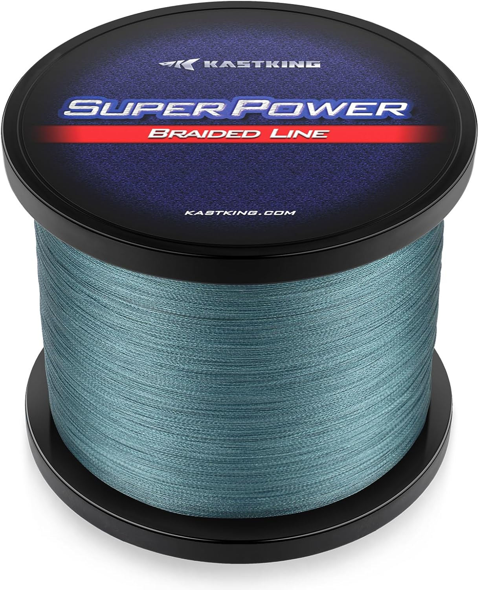

KastKing SuperPower Braid
Diameter chart, reel capacity & backing guide

This guide covers the original SuperPower-branded Gray 150-yard listings and their attached manufacturer artwork. Eight checked strengths run from 6 to 50 lb. These are not Texas Edition, ColorShield or Silky8 specifications, and the chart is not a universal record of every SuperPower spool.
- Construction
- 4-strand braid in the accepted 6-50 lb artwork subset
- Listed strengths
- 6-50 lb
- Line type
- Braid main line
A short braid working spool
The verified package contains 150 yards at each listed strength. That is useful for planning one working section over backing, but it may not provide a full fill or the reserve needed for long runs. At 10 lb the artwork lists .006 inch; at 50 lb it lists .017 inch, so those two packages hold very different line volumes despite equal yardage.
How much SuperPower Braid will fit?
Calculated estimates, not measured fills. Stop at the reel manufacturer's fill level even if some line remains.
KastKing SuperPower Braid diameter chart
US Amazon original-branded artwork subset, Gray 150-yard child listings only. Excludes 12/25 lb chart reversals, 65/80 lb construction conflicts, and unverified longer packages. Printed inch values are the numeric source. Metric diameters are calculated at 25.4 mm per inch; no independently printed metric column was accepted.
| Strength | Inches | mm | Spools (yd) |
|---|---|---|---|
| 0.004 | 0.1016 | 150 | |
| 0.005 | 0.127 | 150 | |
| 0.006 | 0.1524 | 150 | |
| 0.007 | 0.1778 | 150 | |
| 0.010 | 0.254 | 150 | |
| 0.013 | 0.3302 | 150 | |
| 0.014 | 0.3556 | 150 | |
| 0.017 | 0.4318 | 150 |
Choosing your SuperPower Braid strength
Choose strength for the rod, rig and expected load, then check capacity from the selected diameter. The accepted 6/8/10/15/20/30/40/50 lb rows form an increasing diameter sequence in this specific artwork.
The chart also prints inconsistent 12 and 25 lb values. Those rows are excluded, not interpolated or corrected. The 65/80 lb listings are held because their 4X titles conflict with the 8X construction image.
Match the original blue-and-red SuperPower label and the 150-yard Gray listing. A similar name or matching breaking strength does not establish the same diameter on a Texas Edition or another braid.
A source-based specification and setup guide, not a hands-on review or an independent diameter test.
Want a guided recommendation?
Continue in the Setup WizardSame pound test, different diameters
At your selected strength
Loading diameter comparisons...
What changes with another line?
Nearby diameters in the line database
| Line | Strength | Inches | Difference |
|---|---|---|---|
| Loading line database... | |||
Backing, working line & leaders
Budget the 150 yards
Leave enough working braid for your longest cast, expected run and future trimming. For a 100-yard working section, a new 150-yard spool leaves 50 yards before knots and trimming; it is not a second equal fill.
Choose backing from the actual diameter
A short braid working section can sit over mono backing. Enter the selected SuperPower strength and its artwork-scoped diameter, then fit the backing volume to the reel rather than assuming the reel label describes this braid.
Stop at the reel fill clearance
Apply even tension and check the final fill against the reel instructions. The calculation is a volume estimate, and braid packing and the source diameter both limit its precision.
How Much Fits on These Reels?
Estimated full-spool capacity for the SuperPower Braid strength selected above, with no backing. These are calculated examples, not physical tests or recommendations for every pairing.
Loading capacity estimates...
SuperPower Braid questions, answered
Is this the Texas Edition line?
No. The evidence shows the unqualified blue-and-red SuperPower Braided Line label in KastKing-linked Amazon listings. No manufacturer statement proves equivalence to Texas Edition, so its specifications are not substituted.
Does a 300-yard option contain 327 yards?
The separate original 30 lb listing has a 300-yard option but a 327-yard title and item-length field. The artwork also advertises extra yardage. That conflicting package is excluded; this guide accepts only separately checked 150-yard children.
Why are some strengths missing?
The 12/25 lb chart values reverse adjacent strength diameters. The 65/80 lb titles conflict with the strand-count image. Those sizes need exact corroborating labels before they can join this guide.
Specifications & sources
Checked September 13, 2026. Diameters come from manufacturer-branded artwork attached to each separately fetched 150-yard US Amazon child listing. This verifies the stated artwork scope, not production date, historical formulation continuity, measured diameter or universal current specifications. Longer package labels and the excluded strength conflicts remain unresolved.
Calculations use the catalog's listed inch diameters. Published inch and millimeter values may differ slightly because of rounding.
- KastKing SuperPower manufacturer diameter artwork Visually inspected inch table; accepted increasing 6-50 lb subset only.
- KastKing-linked 10 lb Gray 150-yard listing Exact default package. The same chart appears on the other individually archived accepted children.
- Original 30 lb listing with yardage conflict 300 selector versus 327-yard title/table; not an accepted package.